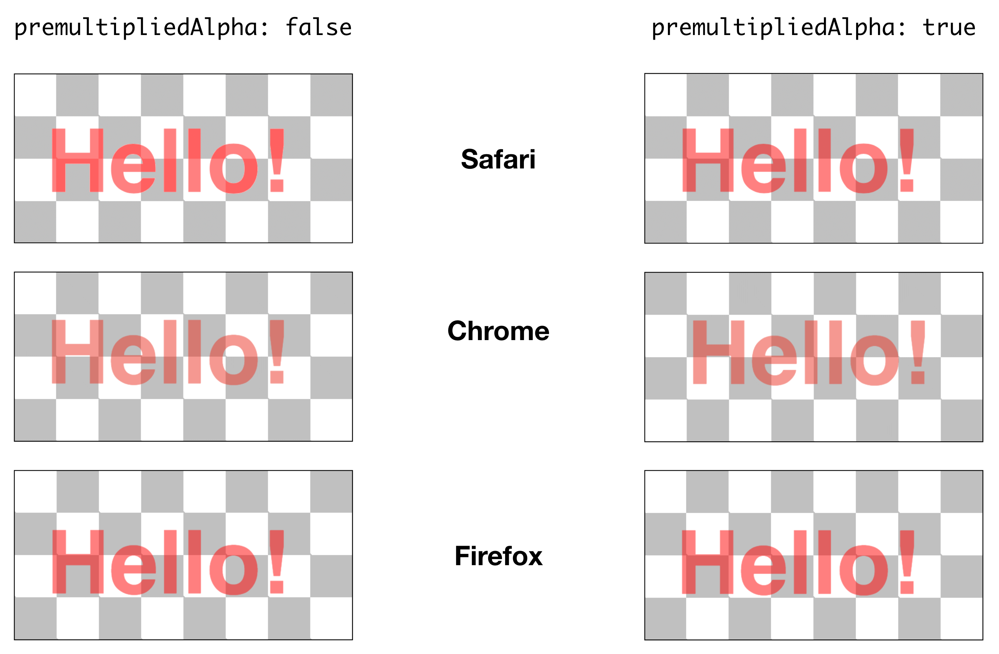

WebGL: Smooth Edges on Transparent Canvases
Task
For a client project I needed to draw text on a transparent WebGL canvas, which was overlaying a video playing in the background of the page.
After having a hard time with some of the more elaborate Three.js based examples, I was able to quickly gain an initial understanding of the underlying plumbing when studying this WebGL-from-Scratch example.
The effect came together quickly and looked great, but unfortunately it didn’t render the same across all browsers. In Safari the partially transparent edges of the text where leading to while artifacts, as to can see here around the highlighted arc of the letter e:

At first I thought the alpha property of the contextAttributes hadn’t been honored, but when switching to a partially transparent font I would be able to see through the letters just fine.
Solution
Since I was already investigating the context properties, I tried my hand at the next one that could be related related to the transparency issue: premultipliedAlpha.
Simply changing this from false to true didn’t improve anything for me in Safari. That was not entirely unexpected, since I assumed that I would have to actually “pre-multiply” the alpha for the setting to work correctly.
I didn’t know how to actually do this, and whether or not this could even be done with information from the canvas alone (or whether it would require knowing what is underneath it), so I just implemented this first attempt in the shader:
vec4 pixel = texture2D(tex0, uv).xyzw;
gl_FragColor = vec4(pixel.x * pixel.w, pixel.y * pixel.w, pixel.z * pixel.w, pixel.w);
Luckily that did indeed solve the white marks on the edges, which are now very smooth:

Next Steps
While the edges are now smooth across the 3 browser listed below, you can see that the rendering color differs across them:

Next, I’ll have to look into how not only to achieve smooth but also color correct renderings.
Further Reading
A sample project containing the code used for this post is available on GitHub at tp/webgl-premultipliedAlpha. You can view the demo in browser using this link.